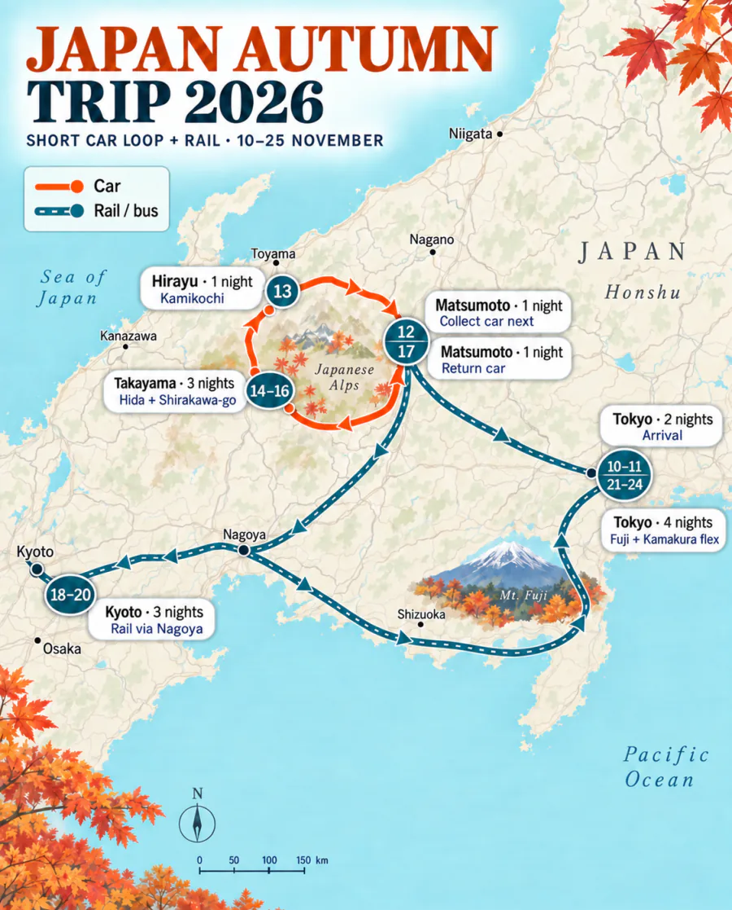
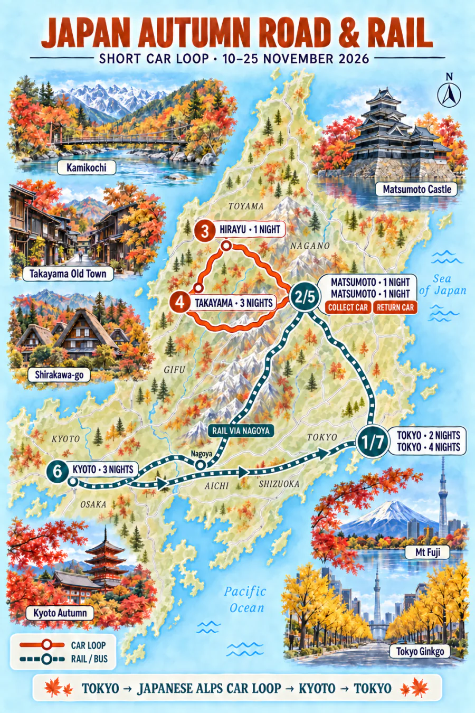
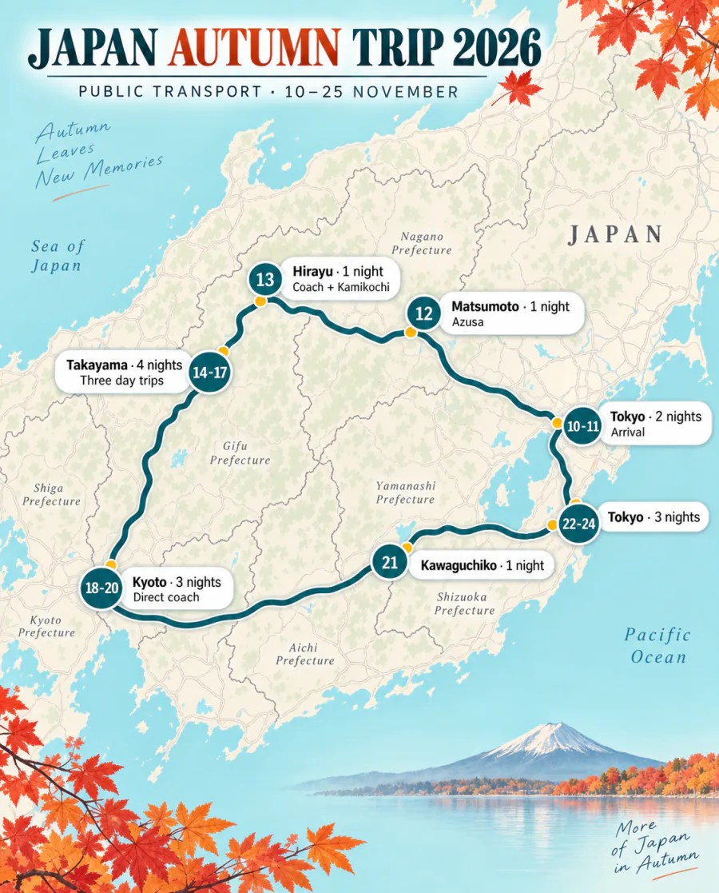
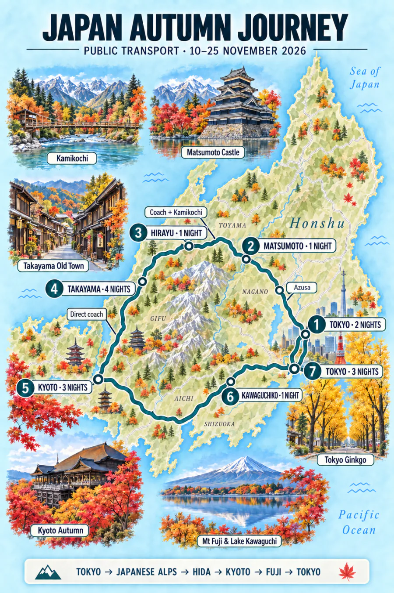
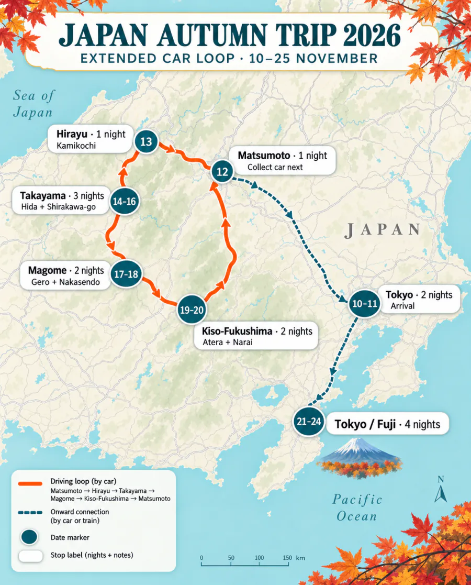
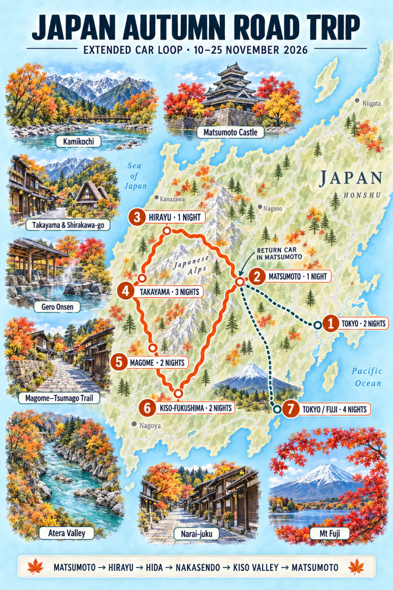
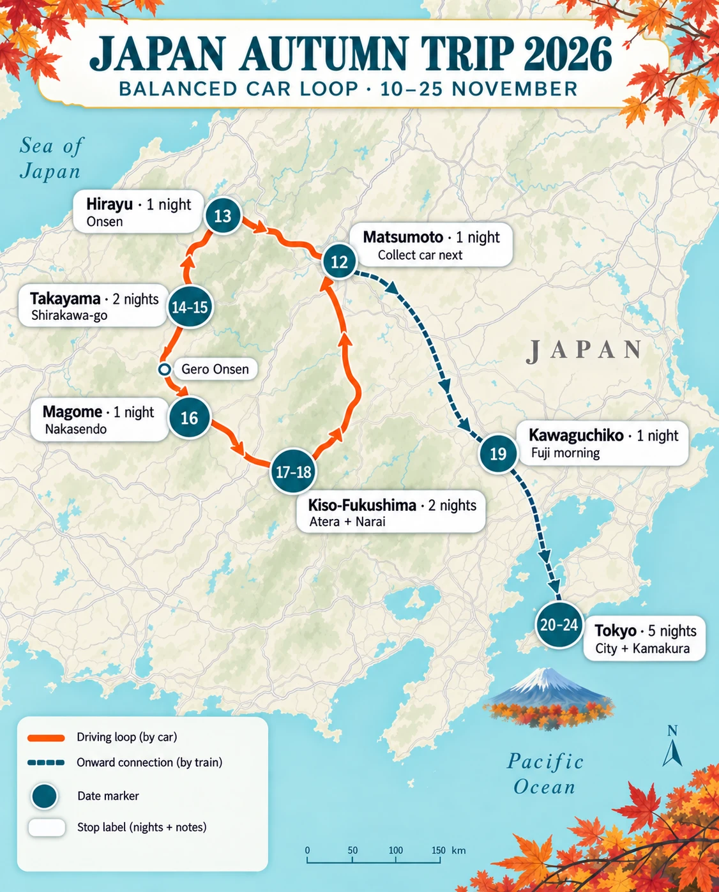
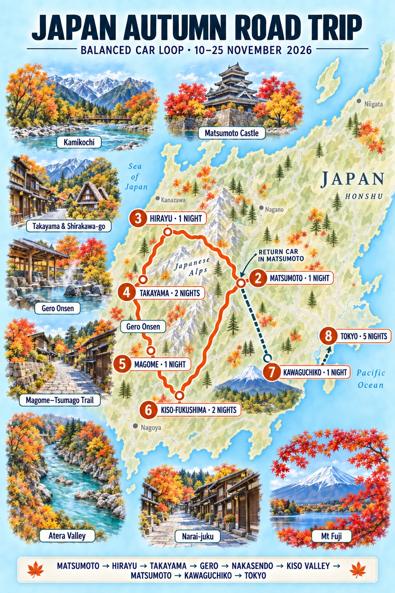

01:20 T2 → 09:35 T1
二人旅15 nights
Following the
autumn light
Tokyo to the Japanese Alps, through old Hida streets and Kyoto maples - then one last clear-sky search for Fuji.
10November-252026
Flights are confirmed. Hotel, excursion and transport reservations remain to be made.
Confirmed international flightsBengaluru ↔ Tokyo NaritaCathay Pacific · via Hong Kong · 10-25 Nov
Airline e-ticket times for both travellers. Confirmed ticket spend: ₹61,881 + ₹69,304 = ₹1,31,185. Recheck the Cathay app before travel.
10:30 T1 → 15:35 T2
14:20 T2 → 18:50 T1
20:45 T1 → 00:15 T2 (26 Nov)
Baggage per person: 2 checked bags up to 23 kg + 1 cabin bag up to 7 kg. Keep passports, medication, valuables and power banks in cabin baggage.
Confirmed routeThe 15-night sequenceThe no-car version is the working itinerary.
01 · 10-12 NovTokyo2 nightsArrival and recovery
02 · 12-13 NovMatsumoto1 nightCastle and old streets
03 · 13-14 NovHirayu Onsen1 nightKamikochi and onsen
04 · 14-18 NovTakayama4 nightsHida, Shirakawa-go, Nakasendo
05 · 18-21 NovKyoto3 nightsFoliage-led days
06 · 21-25 NovTokyo4 nightsFuji and Kamakura flex
Seasonal reality
Kamikochi and Hirayu will be late-season, cold and possibly icy rather than peak-colour stops. Takayama, Kyoto and the final Tokyo stay are the stronger foliage progression; choose the Fuji day by visibility, not by a fixed date.
02
景色 · Places
The landscapes
that shape the trip
Three different expressions of autumn: timber towns, cold mountain light and Kyoto’s maples.
01
14-18 Nov
Four-night base ↗Takayama
River walks, old timber streets and the quieter Higashiyama temples.
02
13 Nov
Late-season walk ↗Kamikochi
Cold river light, bare larch and the final days of the mountain season.
03
18-21 Nov
Three foliage days ↗Kyoto
Takao or Ohara first, then one temple cluster chosen by live colour.
04
13-14 Nov
Onsen night ↗Hirayu Onsen
A mountain ryokan, outdoor baths and one quiet night at the edge of Okuhida.
05
10 & 21-25 Nov
City days ↗Shinagawa
Waterfront paths, rail energy and an urban contrast to the alpine middle.
06
Optional · 21-22 Nov
Compare the lake night ↗Kawaguchiko
A lake evening and an early-morning chance of Fuji beneath autumn colour.
Five complete routesChoose one routeCompare the car loops with both public-transport plans.
SDRouteCompact · five-day car loopShort Alps DriveMatsumoto, Hirayu and Takayama; return on 17 Nov13–17 NovCar


10-12 NovTokyo2 nightsArrival
12-13 NovMatsumoto1 nightCollect car next
13-14 NovHirayu1 nightKamikochi
14-17 NovTakayama3 nightsHida + Shirakawa-go
17-18 NovMatsumoto1 nightReturn car
18-21 NovKyoto3 nightsRail via Nagoya
21-25 NovTokyo4 nightsFuji + Kamakura flex
- 13 Nov: collect at opening time, 08:00, from Toyota Matsumoto Station; drive only to Sawando and use the regulated Kamikochi shuttle.
- 15 Nov: Hida-Furukawa by car. 16 Nov: early Shirakawa-go return trip.
- 17 Nov: allow 2½-3 hours Takayama → Matsumoto; return before dark where possible.
- The branch offers ETC-card rental and Toyota lists Matsumoto Station among winter-tyre-standard shops; still confirm the exact vehicle. Do not use this plan unless the rental desk accepts the IDP.
- Approximate driving: 330-370 km. Allow ¥7,000-9,000 for fuel, tolls and parking, excluding the rental.
RBRouteRecommended · lowest frictionRail & BusPublic transport throughout, with four Takayama nights10–25 NovRail + bus


10-12 NovTokyo2 nightsArrival
12-13 NovMatsumoto1 nightAzusa
13-14 NovHirayu1 nightCoach + Kamikochi
14-18 NovTakayama4 nightsThree day trips
18-21 NovKyoto3 nightsDirect coach
21-25 NovTokyo4 nightsWeather flex
- 13 Nov: reserve Matsumoto 07:40 → Hirayu 09:08, drop bags, then use the Kamikochi shuttle.
- 15 Nov: Hida-Furukawa. 16 Nov: reserved Shirakawa-go day trip.
- 17 Nov: Nakasendo is the first choice; Gero is the easy fallback and Shinhotaka is visibility-dependent.
- 18 Nov: direct Takayama 13:40 → Kyoto 17:55 coach; the 08:00 service is the early alternative.
- No IDP risk, no winter driving and one fewer hotel change than the car version.
GKRouteScenic · longest car loopGrand Kiso DriveTakayama 3 + Magome 2 + Kiso 2 nights13–21 NovCar loop


10-12 NovTokyo2 nightsArrival
12-13 NovMatsumoto1 nightCollect car next
13-14 NovHirayu1 nightKamikochi
14-17 NovTakayama3 nightsHida + Shirakawa-go
17-19 NovMagome2 nightsGero + Nakasendo
19-21 NovKiso-Fukushima2 nightsAtera + Narai
21-25 NovTokyo / Fuji4 nightsVia Matsumoto
- 13 Nov: collect at 08:00, drive to Sawando, use the regulated Kamikochi shuttle, then sleep in Hirayu. Recheck the late-season timetable and trail conditions the evening before.
- 14-16 Nov: three Takayama nights are well paced, not excessive: the first is an arrival day, followed by Hida-Furukawa and Shirakawa-go outings. Keep the final afternoon in each day flexible.
- 17 Nov: Takayama → optional Gero stop → Magome. 18 Nov: leave luggage at the Magome stay, drive to Tsumago and park, then use the 10:17 bus or a pre-booked taxi to Magome and walk back to the car.
- 19 Nov: pre-confirm a 10:00-13:00 Atera e-bike, keep luggage concealed in the locked car and treat Nezame-no-Toko as optional. 20 Nov: Narai and Kiso-Hirasawa day trip.
- 21 Nov: refuel and return the car in Matsumoto in the morning, then continue to Tokyo or Kawaguchiko.
- Use this version only with an accepted IDP and written confirmation of studless winter tyres for the exact vehicle.
What to do each day
One main outing each day, with the car loop kept deliberately unhurried.
- TokyoNight 1 of 2Arrive and reset
Land at Narita at 15:35, transfer to the hotel, eat nearby and sleep. No major sightseeing.
- TokyoNight 2 of 2One Tokyo neighbourhood
Choose Yanaka–Nezu, Kiyosumi–Monzen-Nakacho or Meiji Jingu–Omotesando; finish early and pack.
- Matsumoto1 nightCastle and old streets
Take the Azusa from Shinjuku, then see Matsumoto Castle, Nawate Street and Nakamachi. Confirm the next morning’s car collection.
- Hirayu1 nightKamikochi via Sawando
- 08:00Collect the car in Matsumoto, confirm the winter tyres and keep warm layers, gloves and grippy footwear accessible.
- 09:15–10:15Park at Sawando Bus Terminal, buy the non-reserved return ticket and shuttle into Kamikochi. If the stop is operating, get off at Taisho Pond.
- 10:15–12:30Walk Taisho Pond → Tashiro Pond → Tashiro Bridge → Kappa Bridge, staying on the main paths if there is frost or snow.
- 12:30–14:45Lunch near Kappa Bridge, then add the easy riverside or Dakesawa Marsh section. Skip the longer Myojin walk unless paths are dry and you have a comfortable return-bus margin.
- 15:00 onwardTake a shuttle that reaches Sawando before dusk, drive to Hirayu, check in and finish with the onsen and ryokan dinner.
- TakayamaNight 1 of 3Takayama old town
- 08:30–10:00Have breakfast, check out of Hirayu and drive to Takayama; park once and leave luggage at the accommodation.
- 10:15–12:00Visit Takayama Jinya and catch the last part of the Jinya-mae market before it closes.
- 12:00–14:30Lunch, then explore Sanmachi’s preserved streets, craft shops and sake breweries. The driver should save tastings for after the car is parked for the day.
- 14:30–16:15Walk the lower Higashiyama temple route; use the free Museum of History and Art or Showa-kan instead if it is wet or already getting dark.
- EveningCheck in and reserve a proper Hida beef, hoba-miso or Takayama ramen dinner rather than relying on old-town shops after they close.
- TakayamaNight 2 of 3Hida-Furukawa half-day
- 07:30–08:30Walk Takayama’s Miyagawa Morning Market and riverside before breakfast crowds build.
- 09:00–09:40Drive to Hida-Furukawa and use the free city-hall or station-side parking; leave the car for the whole visit.
- 09:45–12:30Walk the Setogawa canal and white-walled storehouses, the temple lanes and one indoor stop: the Festival Exhibition Hall or Takumikan craft museum.
- 12:30–14:00Have soba or a local lunch, browse the two sake breweries and return to Takayama. Only the non-driver should taste.
- 14:30 onwardChoose one relaxed Takayama extra: Sakurayama Hachimangu and the festival-float hall, Showa-kan plus a café, or simply an onsen and early dinner. Hida Folk Village is optional because Shirakawa-go follows tomorrow.
- TakayamaNight 3 of 3Early Shirakawa-go
- 07:30Leave Takayama early and drive directly to the official Seseragi parking area; do not take the car into the heritage village.
- 08:30–09:30Cross Deai Bridge and do the observation deck first, using the village shuttle if running or the signed walking route if open.
- 09:30–12:00Walk the quieter lanes, irrigation channels and viewpoints, then enter one representative house—Wada or Kanda—and Myozenji if time remains.
- 12:00–13:30Eat an early lunch, complete the southern village loop and return across Deai Bridge before the busiest afternoon period.
- 13:30 onwardDrive back to Takayama for a missed museum, café or onsen. Keep this buffer instead of adding Gokayama; it protects the day against parking queues, cold weather and early darkness.
- MagomeNight 1 of 2Gero stop, then Magome
- 08:30Leave Takayama after breakfast and drive south toward Gero.
- 10:00–12:00Use Gero for a riverside walk, footbath or one pre-checked day-use onsen, followed by an early lunch.
- 12:15–14:30Continue to Magome with a buffer for the mountain roads; do not add another major stop.
- 15:00 onwardCheck in, leave the car and stroll Magome’s sloping old street and viewpoint before shops close and daylight fades. Eat at the accommodation or reserve dinner nearby.
- MagomeNight 2 of 2Magome–Tsumago Nakasendo
Leave the luggage at your Magome accommodation. Drive to Tsumago, park in a designated lot and take the 10:17 bus—or a pre-booked taxi—to Magome. Walk the 8–9 km trail back to Tsumago, explore the old street and Wakihonjin, then finish at your car and drive back to the same Magome stay.
- Kiso-FukushimaNight 1 of 2Atera Valley cycling and Nezame-no-Toko
- 08:30Check out of Magome. Keep suitcases concealed in the locked car and carry passports, money and electronics in the daypack.
- 09:30Reach Atera Valley’s second parking area and complete the pre-confirmed e-bike pickup.
- 10:00–13:00Ride upstream at an easy pace, stopping around Tanuki-ga-fuchi, Kuma/Ushi-ga-fuchi and Bigansui or the campground before turning back.
- 13:00–14:00Return the bicycles and have a quick lunch or packed snack.
- 14:00 onwardAdd Nezame-no-Toko only if the weather, road and daylight are comfortable; otherwise continue directly and check in at Kiso-Fukushima by roughly 15:30–16:00.
- Kiso-FukushimaNight 2 of 2Narai and Kiso-Hirasawa
- 08:30Leave luggage at the accommodation and drive north; park outside Narai’s preserved street.
- 09:15–12:15Walk Narai-juku before the busiest period, choose one historic residence or small museum, and browse the wooden shops.
- 12:15–13:15Have soba, gohei-mochi or a simple local lunch in Narai.
- 13:30–15:00Drive the short distance to Kiso-Hirasawa and focus on lacquerware shops or a workshop rather than another long walk.
- 15:45 onwardReturn to Kiso-Fukushima for Kozenji, the Uenodan old quarter or the public footbath, then have an unhurried final Kiso dinner.
- Tokyo / FujiNight 1 of 4Return car and transfer
Leave after breakfast, refuel and return the car in Matsumoto by late morning. Continue after lunch to Tokyo or Kawaguchiko; add no major sightseeing.
- Tokyo / FujiNight 2 of 4Clear-sky Fuji window
If staying by the lake, use sunrise and the north/east shore before Tokyo. Otherwise, make the day trip only with a strong visibility forecast.
- TokyoNight 3 of 4Public-holiday Tokyo
Choose one walkable neighbourhood and a park or garden with good live autumn colour; reserve any important meal.
- TokyoNight 4 of 4Kamakura or weather swap
Start at Kita-Kamakura, walk selected temple grounds and continue toward Hase or the coast—or use this as the Fuji day if skies are clearer.
- DepartureNarita T2Airport only
Leave the Tokyo hotel around 09:00–09:30 for the 14:20 flight. Keep the morning free of sightseeing.
BKRouteBalanced · fewer hotel nightsBalanced Kiso DriveGero, one Magome night, Kiso and Kawaguchiko13–20 NovCar + rail


10–12 NovTokyo2 nightsArrival
12–13 NovMatsumoto1 nightCollect car next
13–14 NovHirayu1 nightOnsen first
14–16 NovTakayama2 nightsKamikochi + Shirakawa
16–17 NovMagome1 nightVia Gero
17–19 NovKiso-Fukushima2 nightsNakasendo + valley
19–20 NovKawaguchiko1 nightAfter car return
20–25 NovTokyo5 nightsOne day trip
- This version has no museum or castle-interior priorities: the focus is streets, gardens, scenery, short walks and onsen.
- Sunset is around 16:35–16:45 through this part of the trip. Protect the Magome arrival, Nakasendo walk and Atera Valley daylight rather than adding extra stops.
- Book half-board in Hirayu and Magome where possible. Rural dinner choices close early, and Magome accommodation may require arrival before 17:00.
- Keep passports, money and electronics with you. If luggage remains in the car at Tsumago or Atera, conceal it before reaching the parking area.
- 19 November is the tightest transfer. If Narai runs late, skip Hirasawa and protect the Matsumoto car-return appointment and Kawaguchiko connection.
- Confirm the accepted IDP, studless winter tyres, ETC card and roadside cover in writing for the exact rental vehicle.
What to do each day
Later starts, two Takayama nights and only one major outing per day.
- TokyoNight 1 of 2Arrive and reset
Land at Narita Terminal 2 at 15:35, transfer to Shinjuku, eat near the hotel and sleep. Allow 1½–2 hours for immigration, bags and IC-card setup.
- TokyoNight 2 of 2Meiji Jingu to Daikanyama
Start around 10:00 with Meiji Jingu grounds, continue through Omotesando and Aoyama, then use the train or taxi for Daikanyama if energy remains. Finish around 16:00 and pack.
- Matsumoto1 nightCastle exterior and old streets
Use the 10:00 Azusa if an earlier departure requires an uncomfortable wake-up. After lunch, walk the castle exterior and moat, Nawate Street, Yohashira Shrine and Nakamachi. Confirm the rental collection.
- Hirayu1 nightCollect car and slow Hirayu afternoon
- 09:30Collect the car in Matsumoto; photograph the vehicle, confirm studless winter tyres, ETC arrangements and emergency numbers.
- 11:15–12:00Reach Hirayu, leave luggage at the ryokan and have lunch.
- AfternoonWalk the village, footbath or Hirayu waterfall only if paths are dry and comfortable. Do not force Kamikochi into this day.
- EveningRyokan onsen and dinner. Half-board is strongly preferable.
- TakayamaNight 1 of 2Kamikochi from Akandana
- 09:00–09:30Check out, leave larger luggage safely in the car and park at Akandana. Take the shuttle toward Kamikochi.
- 10:00–12:15Get off at Taisho Pond if operating, then walk via Tashiro Pond and the riverside to Kappa Bridge. Stay on the main route if there is frost or snow.
- 12:15–14:00Lunch or packed food near Kappa Bridge, a short riverside extension if conditions allow, then return by shuttle.
- 14:00–16:30Collect the car and drive to Takayama before dark. Check in, park once and eat near the hotel.
- TakayamaNight 2 of 2Shirakawa-go and Takayama
- 09:35Take the reserved Nohi bus from Takayama; leave the car parked.
- 10:25–11:30Reach Shirakawa-go and go directly to the viewpoint, walking or using the local shuttle according to conditions.
- 11:30–12:50Walk the village lanes, rice fields and suspension bridge; have a snack rather than a long lunch.
- 13:15–14:05Return by reserved bus. For a non-reserved service, queue 20–30 minutes early.
- 14:15 onwardHave a late lunch, then walk Sanmachi and the Miyagawa riverside. Skip interiors and finish before shops close.
- Magome1 nightGero Onsen, then Magome
- 09:30Check out and drive from Takayama to Gero.
- 10:30–12:45Walk the riverside and use a footbath or prearranged day-use onsen. Verify bath hours shortly before travel.
- 12:45–13:30Lunch in Gero. If running late, keep only the riverside, footbath and lunch.
- 13:30–15:45Drive to Magome, check in and walk the sloping post-town street before dusk.
- EveningEat at the accommodation; do not depend on the village restaurants remaining open.
- Kiso-FukushimaNight 1 of 2Magome–Tsumago Nakasendo
- 09:15Check out, drive to a designated Tsumago car park and keep valuables in the daypack.
- 10:17Take the local bus from Tsumago to Magome; carry small cash and confirm the seasonal timetable again before travel.
- 10:45–14:15Walk the 8–9 km trail back to Tsumago with short rests. The direction is generally easier and finishes at the car.
- 14:15–15:30Walk Tsumago’s old street outdoors and have a late snack. Skip Wakihonjin unless you change your mind about interiors.
- 15:30 onwardDrive to Kiso-Fukushima and check in before dinner.
- Kiso-FukushimaNight 2 of 2Atera Valley and Nezame-no-Toko
- 10:00Leave after breakfast. Use short roadside viewpoints and a manageable valley walk rather than relying on seasonal bicycle rental.
- 12:30–13:30Lunch around Nojiri, Agematsu or from a prepared picnic, depending on what is open.
- 13:30–15:15Visit Nezame-no-Toko. Use the upper viewpoint if wet rocks, fatigue or fading daylight make the descent undesirable.
- 16:00 onwardReturn to Kiso-Fukushima for the riverside, footbath and an unhurried evening.
- Kawaguchiko1 nightNarai, return car and transfer
- 09:15Check out and drive to Narai. Park outside the preserved street.
- 10:00–11:30Walk Narai-juku and browse exterior streets and shops; do not add house interiors.
- 11:40–12:15Make a brief Kiso-Hirasawa lacquerware stop only if the morning is on time.
- 12:15–14:00Drive to Matsumoto, refuel and return the car. Skip Hirasawa if needed—this appointment controls the day.
- AfternoonTravel by train via Otsuki to Kawaguchiko. Expect an evening arrival, so reserve dinner or buy food before the final train.
- TokyoNight 1 of 5Fuji morning, then Tokyo
Start around 09:00 with breakfast and the clearest available lakeside view. Use the north or east shore according to the weather, leave around noon and reach Shinjuku in mid-afternoon. Keep the evening local.
- TokyoNight 2 of 5Shinjuku Gyoen and Kagurazaka
Start around 10:00 in Shinjuku Gyoen, have lunch nearby, then move to Kagurazaka for lanes, cafés and an early dinner. Keep this entirely outdoors apart from meals.
- TokyoNight 3 of 5Kiyosumi and Monzen-Nakacho
Start around 10:00 at Kiyosumi Garden, continue through the cafés and warehouse streets, then walk or ride to Monzen-Nakacho and the riverside.
- TokyoNight 4 of 5Public-holiday autumn garden
Choose Rikugien, Hamarikyu or Koishikawa Korakuen according to live colour. Pair it with only one nearby neighbourhood and reserve dinner because this is a national holiday.
- TokyoNight 5 of 5Kamakura day trip
Leave around 09:00–09:30 for Kita-Kamakura, choose a small number of temple grounds and continue toward Hase and the coast. If tired or the weather is poor, make this another Tokyo day instead.
- DepartureNarita T2Airport only
Leave Shinjuku around 09:00–09:30 for the 14:20 flight from Narita Terminal 2. Keep the morning free of sightseeing.
PTRouteNo car · booked Kiso staysPublic Transport OnlyAB Hotel, Nezame Hotel, Nakasendo and lower Atera Valley10–25 NovRail + bus
10–12 NovTokyo2 nightsArrival
12–13 NovMatsumoto1 nightAzusa
13–14 NovHirayu1 nightCoach + onsen
14–16 NovTakayama2 nightsKamikochi + Shirakawa
16–17 NovNakatsugawaAB Hotel · 1 nightMagome first
17–19 NovAgematsuNezame Hotel · 2 nightsNakasendo + Atera
19–20 NovKawaguchiko1 nightEvening arrival
20–25 NovTokyo5 nightsCity + Kamakura
- Carry the bags between hotels. On 17 November, use only the same-day Magome–Tsumago luggage service: with two large suitcases and two 40-litre backpacks, hiking the trail without it is not practical. Budget ¥4,000 for four pieces; drop by 11:30 and collect by 17:00.
- Board rural buses at their starting point where possible and keep the backpacks compact. Large coach holds are straightforward; small local buses have limited floor space.
- AB Hotel is reached by local bus from Nakatsugawa Station to Tegano-naka. Nezame Hotel is reached from Agematsu Station by town bus to Chugakko; the hotel does not provide a shuttle.
- Buy lunch before the Nakasendo and Atera days. Magome, Tsumago and the Kiso towns have cafés and restaurants, but choices thin out after mid-afternoon and closing days vary.
- The 17 November late-start sequence has only a short margin before the luggage counter closes. Confirm the service directly; use the earlier 08:38 local bus from Tegano-naka if it will not hold four pieces.
- Planning times reflect current published schedules and can change before November 2026. Recheck every rural leg when autumn timetables are released.
What to do each day
Late starts where they work, carried luggage between bases and the fewest sensible transfers.
- TokyoNight 1 of 2Arrive and reset
Transfer from Narita to Shinjuku, eat close to the hotel and sleep.
- TokyoNight 2 of 2Meiji Jingu to Daikanyama
Begin around 10:00 with Meiji Jingu, Omotesando and Aoyama; add Daikanyama only if energy remains.
- Matsumoto1 nightAzusa and old streets
Take an Azusa around 10:00. After lunch, walk the castle exterior and moat, Nawate, Yohashira Shrine and Nakamachi.
- Hirayu1 nightSlow Hirayu afternoon
After an 08:30 wake-up, take a reserved mid-morning direct coach from Matsumoto to Hirayu. Check in or leave bags, have lunch, then choose the village, footbath or waterfall if paths are comfortable. Finish with the onsen.
- TakayamaNight 1 of 2Kamikochi, then Takayama
Ask the Hirayu stay to hold the large bags after checkout. Around 09:30, shuttle to Kamikochi and walk Taisho Pond → Tashiro Pond → Kappa Bridge. Return around 14:00–14:30, collect the bags and take the direct bus to Takayama.
- TakayamaNight 2 of 2Shirakawa-go
Use the reserved 09:35 Nohi bus, visit the viewpoint and village lanes, and return around 14:05. Spend the remaining daylight in Takayama’s old streets and by the river.
- NakatsugawaAB Hotel · 1 nightTakayama → Magome → AB Hotel
- 08:00–10:45Take the reserved direct Nohi coach to Magome with all luggage in the hold. This is the trip’s only necessary pre-08:30 wake-up.
- 10:45–15:30Store the bags at Magome BASE, have lunch and explore the post-town street without rushing.
- 15:50–16:15Take the Kitaena bus from Magome to Nakatsugawa Station.
- 16:45 onwardUse the local bus to Tegano-naka, then walk to AB Hotel. Eat near the hotel or buy dinner at Nakatsugawa Station before boarding.
- AgematsuNezame Hotel · night 1 of 2Nakasendo trail, then Nezame
- 09:56–10:08Take the local bus from Tegano-naka to Nakatsugawa Station, carrying every bag.
- 10:45–11:10Bus to Magome. Immediately hand all four pieces to the same-day luggage counter before its 11:30 cutoff.
- 11:15–14:30Walk the 8–9 km Nakasendo trail to Tsumago. Carry water and a packed lunch; daylight matters more than a sit-down meal.
- 14:30–16:00See Tsumago’s old street and collect the bags. Take the 16:14 bus to Nagiso.
- Around 17:00Use the next direct local train to Agematsu, then the 18:05 town bus to Chugakko and walk to Nezame Hotel. Recheck the exact railway minute before booking.
- AgematsuNezame Hotel · night 2 of 2Lower Atera Valley and Nezame-no-Toko
- 09:11–09:52Leave luggage at the hotel; bus from Chugakko to Agematsu, then local train to Nojiri.
- 10:20–11:45Walk about 30 minutes to Atera Valley and see only the lower-valley water and viewpoints. Turn back early enough to protect the sparse train.
- Around 12:25Train north to Kiso-Fukushima for lunch, riverside and Uenodan. Check the live schedule before setting out.
- Around 15:10Take the through town bus toward Chugakko. Visit Nezame-no-Toko from the hotel side before dark; use the upper viewpoint if rocks are wet.
- Kawaguchiko1 nightNarai and Hirasawa, then the lake
- 09:11Town bus to Agematsu with every bag; take the next direct local train north to Narai, currently around 10:55.
- Late morningStore the luggage at Narai’s staffed tourist office, walk the old street, then collect it before continuing one stop to Kiso-Hirasawa.
- AfternoonBrowse lacquerware with the bags, then take a local train to Shiojiri. Reserve an Azusa that stops at Otsuki and change once there for Kawaguchiko.
- EveningExpect arrival around 20:00–21:00 if Hirasawa is retained. Buy dinner before the final leg and notify the accommodation of the late check-in.
- TokyoNight 1 of 5Fuji morning, then Tokyo
Begin around 09:00 with breakfast and the clearest lakeside view, leave around noon and reach Shinjuku in mid-afternoon.
- TokyoNight 2 of 5Shinjuku Gyoen and Kagurazaka
Start around 10:00, have lunch near the garden, then continue to Kagurazaka.
- TokyoNight 3 of 5Kiyosumi and Monzen-Nakacho
Start around 10:00 at Kiyosumi Garden, then use the cafés, warehouse streets and Monzen-Nakacho riverside.
- TokyoNight 4 of 5Autumn garden
Choose Rikugien, Hamarikyu or Koishikawa Korakuen according to live colour. Keep the reserved dinner.
- TokyoNight 5 of 5Kamakura
Leave around 09:00–09:30 for Kita-Kamakura, a small number of temple grounds, Hase and the coast.
- DepartureNarita T2Airport only
Leave Shinjuku around 09:00–09:30 for the 14:20 flight.
Accommodation reservationsBooked stays and active optionsBrief room notes, station access and the conservative price used in the budget.
Covered planKawaguchiko overnight route
All 15 nights are held when 21-22 Nov is spent at the lake.
Still missingDirect-Tokyo night · 21-22 Nov
The four-night Tokyo version needs one extra night before the Ikebukuro booking begins.
Hotel Opera
Economy double, private shower, room-only; late 20:00 check-in.
- Nearest
- Ōkubo 2 min · Shin-Ōkubo 3 min
- Main station
- Shinjuku ~15 min walk / one JR stop
Hotel Siena
Standard double, private bath, room-only. Higher-priced option used for budgeting.
- Nearest
- Seibu-Shinjuku ~7 min · Higashi-Shinjuku ~8 min
- Main station
- JR Shinjuku ~8-11 min walk
Hotel Iidaya
Economy double, room-only; confirmation lists one 90-130 cm bed, so verify comfort for two.
- Main station
- JR Matsumoto Castle Exit · 1 min walk
- Bus terminal
- Across the station area · about 3-5 min
Yunohana Fuwari Yumotokan
Japanese futon room, shared bath and room-only - this is not the earlier half-board assumption.
- Nearest transport
- Hirayu Bus Terminal · about 4-5 min walk
- Rail connection
- Takayama Station · roughly 60 min by bus
Hotel Hana
Japanese-style futon room; smoking room; breakfast included.
- Main station
- Takayama Station · ~590 m / 7 min
- Bus terminal
- Nohi Bus Center · about 5-10 min
AB Hotel Nakatsugawa
The practical available base for the no-car route; use the local bus rather than walking from the station with four bags.
- Nearest bus
- Tegano-naka · short walk
- Main station
- Nakatsugawa · local bus connection
Nezame Hotel
Well placed for Nezame-no-Toko and workable for lower Atera Valley. There is no hotel shuttle.
- Nearest bus
- Chugakko · about 2 min walk
- Main station
- Agematsu · 7-8 min by town bus
Smart Place Inn Kyoto Nijojo-mae
Twin room, private bath, room-only; convenient subway base by Nijō Castle.
- Nearest
- Nijōjō-mae subway · ~4 min
- Main station
- Kyoto Station · roughly 20 min by bus/taxi
Guest House Hitsujian
Two futons and shared bath; rooms are not lockable or soundproof. Higher-priced option used.
- Nearest
- Nijōjō-mae subway · ~500 m / 8 min
- Main station
- Kyoto Station · roughly 20 min by bus/taxi
Lake House Kawaguchiko
Mountain-view twin futon room with shared bathroom; room-only.
- Main station
- Kawaguchiko · ~2.5 km / ~35 min walk
- Practical transfer
- Use local bus or taxi with luggage
Guesthouse Honobono
Mountain-view futon room, shared bath; free station shuttle available by advance request.
- Main station
- Kawaguchiko · 2.2 km / ~26 min walk
- Best transfer
- Pre-arranged guesthouse shuttle
APA Hotel Ikebukuro Eki Kitaguchi
Non-smoking double with private bath, room-only; practical final-city base.
- Main station
- Ikebukuro West Exit · 4 min walk
- Airport day
- Direct connections via the wider rail network
Short Alps Drive gaps
The Short Alps Drive still needs Matsumoto for 17-18 Nov, and the current Takayama booking runs through 18 Nov. Adjust both only if that route is chosen. Personal details and booking identifiers are deliberately excluded from this public page.
Grand Kiso Drive gaps
Grand Kiso Drive needs Takayama changed to 14-17 Nov, plus Magome for 17-19 Nov and Kiso-Fukushima or a nearby Kiso base for 19-21 Nov. Cancel Kyoto only after the car, accepted IDP and winter tyres are confirmed.
Balanced Kiso Drive gaps
Balanced Kiso Drive needs Takayama for 14-16 Nov, Magome for 16-17 Nov, Kiso-Fukushima for 17-19 Nov, Kawaguchiko for 19-20 Nov and one Tokyo hotel for 20-25 Nov. The current 22-25 Nov Ikebukuro booking leaves 20-22 Nov uncovered unless it can be extended.
Public Transport Only bookings
Keep AB Hotel on 16 November and Nezame Hotel on 17–19 November. They avoid another accommodation search, but require the Tegano-naka and Chugakko local buses. Do not cancel them for an unavailable Magome or Kiso-Fukushima room.
Confirmed itineraryDay by day16 calendar dates · 15 nights · tap to close
Rail/bus Slow day
10 NovArrive in TokyoTokyo · 1/2
Plan
- Land at Narita Terminal 2 at 15:35. Allow 1½-2 hours for immigration, bags, cash and IC-card setup.
- Take Narita Express or an airport bus to the hotel area; check in and keep the evening local.
- Complete Visit Japan Web before landing and carry a compact first-night essentials kit.
11 NovOne outdoor Tokyo neighbourhoodTokyo · 2/2
Plan
- Choose one compact outdoor area: Yanaka-Nezu, Kiyosumi-Monzen-Nakacho, or Meiji Jingu-Omotesando.
- Finish early enough to pack and confirm the next morning's Azusa departure.
12 NovTokyo → MatsumotoMatsumoto · 1/1
Plan
- Take Azusa 9, Shinjuku 09:00 → Matsumoto 11:39. Leave bags at a station-side hotel.
- Walk Matsumoto Castle, Nawate Street and Nakamachi; buy snacks for the early coach tomorrow.
13 NovHirayu bag drop and KamikochiHirayu · 1/1
Plan
- Reserve Matsumoto 07:40 → Hirayu 09:08. Drop suitcases at the ryokan, then use the 09:30 shuttle to Kamikochi.
- Walk Kappa Bridge and the valley according to daylight, ice and weather; take the shorter Tashiro Pond/Taisho Pond route if conditions are poor.
- Return well before the last bus and use the onsen. The current reservation is room-only, so arrange dinner separately before kitchens close.
14 NovHirayu → TakayamaTakayama · 1/4
Plan
- Take the 09:30 or 10:30 Nohi bus to Takayama, check in near the station and walk Sanmachi and the Miyagawa River.
- Use the late afternoon for the lower Higashiyama temple walk rather than squeezing in another excursion.
15 NovHida-Furukawa and TakayamaTakayama · 2/4
Plan
- Take a local train to Hida-Furukawa for the canal, storehouses and old streets; return after lunch.
- Complete the quieter Higashiyama route or explore streets east of the Enako River.
16 NovEarly Shirakawa-go day tripTakayama · 3/4
Plan
- Reserve Takayama 07:50 → Shirakawa-go 08:40; leave all luggage at the hotel.
- Visit the observation deck first, then walk through the village and choose one representative house.
- Use a reserved 14:00 or 15:15 return. Expect late/falling leaves and possible early snow.
17 NovNakasendo first choiceTakayama · 4/4
Plan
- Preferred: reserved direct bus Takayama 08:00 → Magome 10:45; walk 8-9 km to Tsumago and protect the 15:00 return.
- Fallback: Gero Onsen for poor walking weather or tired legs. Use Shinhotaka only with excellent visibility and safe wind conditions.
18 NovTakayama → KyotoKyoto · 1/3
Plan
- Use the relaxed morning in Takayama, then take the reserved direct 13:40 → 17:55 coach to Kyoto Hachijo Exit.
- Suitcases go in the coach hold. Use the 08:00 service only if more Kyoto time is worth the early departure.
19 NovKyoto hills for earlier colourKyoto · 2/3
Plan
- Choose Takao for a foliage-focused walking day or Ohara for a gentler rural temple-and-village day.
- Start early and commit to one area; use the clearest day for Takao.
20 NovKyoto foliage clusterKyoto · 3/3
Plan
- Choose one outdoor cluster: Tofukuji-Fushimi, northern Higashiyama or quieter Arashiyama edges.
- Pack before dinner for the Tokyo transfer tomorrow.
21 NovTokyo transfer or Kawaguchiko overnightTokyo 1/4 or lake 1/1
Standard plan
- Take a reserved Shinkansen to Tokyo and keep the evening local. This version still needs a hotel for 21-22 Nov; the Ikebukuro reservation begins on 22 Nov.
- The 21-23 November holiday weekend begins: do not use the transfer day for another major excursion.
Lake alternateKyoto → Mishima → Kawaguchiko
Take a suitable Hikari/Kodama to Mishima and the prebooked Fujikyu coach to Kawaguchiko. This replaces the unbooked first Tokyo night.
22 NovClear-sky Fuji day or lake morningTokyo 2/4 or 1/3
Plan
- From Tokyo, make a Kawaguchiko day trip only if Fuji visibility is excellent; reserve an early outbound and sensible return.
- With the lake overnight, use sunrise and early morning for the north/east shore, then take a reserved afternoon coach to Shinjuku.
- Prioritise the mountain view over autumn colour, which is highly year-dependent.
23 NovTokyo public-holiday dayTokyo · 3/4
Plan
- Stay in Tokyo and choose one walkable neighbourhood plus a park or garden with good live colour.
- Use early morning and evening for popular places; reserve any important meal.
24 NovKamakura - or weather swapTokyo · 4/4
Plan
- Take an early train to Kita-Kamakura, link a small number of temple grounds on foot and continue toward Hase or the coast.
- Swap this day with Kawaguchiko if the forecast is materially clearer.
25 NovDeparture from Narita-
Plan
- CX527 departs Narita Terminal 2 at 14:20. Leave the Tokyo hotel around 09:00-09:30 for a three-hour airport margin.
- Do not plan sightseeing. Keep passports, tickets, tax-free purchases and essential medication accessible.
Kyoto base · 19 or 20 NovemberFour genuinely different day tripsAlready seen Kyoto, Nara and Osaka? These add a canal town, a mountain traverse, tea and sake country, or one exceptional castle day.
Best fit for this tripOmihachiman
Quiet old streets, a canal and Lake Biwa without a punishing travel day.
How to use these: replace either the 19 November hills day or the 20 November Kyoto foliage cluster. Keep the other day flexible for the best live autumn colour.
Planning costs are per person, converted at roughly ¥1 = ₹0.62. Meals and travel from the Kyoto hotel to Kyoto Station are excluded.
Omihachiman & Lake Biwa
Merchant-town atmosphere, waterside scenery and a gentle pace.
- Estimated cost
- ₹2,600–3,160 ¥4,200–5,100
- Travel time
- 35–40 min each way
How to go
Take a direct JR Biwako Line Special Rapid from Kyoto to Omihachiman, then the local bus to Osugicho for the old town and canal.
What to do
Walk Shinmachi merchant street and Hachimanbori Canal, take a short canal boat, then use the Hachimanyama Ropeway for Lake Biwa views. Add Omi beef or local lake fish for lunch.
Mount Hiei → Sakamoto
A mountain crossing, forest temples and a historic town on the Lake Biwa side.
- Estimated cost
- ₹2,670–2,980 ¥4,300–4,800
- Travel time
- 2½–3 hrs combined
How to go
Reach Demachiyanagi, take the Eizan train to Yase, then cable car and ropeway up Mount Hiei. Cross the mountain by shuttle bus and descend on the Sakamoto Cable; return to Kyoto by JR from Hieizan-Sakamoto.
What to do
Focus on Enryakuji's Todo precinct, the mountain viewpoints and the cable descent. If energy allows, add Hiyoshi Taisha or Former Chikurin-in in Sakamoto. Expect steps and several short walks.
Uji + Fushimi
Tea culture, a riverside temple and a relaxed sake-brewery district.
- Estimated cost
- ₹1,240–2,480 ¥2,000–4,000
- Travel time
- About 1½ hrs combined
How to go
Take the JR Nara Line from Kyoto to Uji in about 20–30 minutes. After Uji, walk to Keihan Uji and take the direct train to Chushojima for Fushimi; return to central Kyoto by Keihan.
What to do
See Byodoin and the Uji River, book a tea-grinding or tea-making experience at Chazuna, then stroll Fushimi's canals and sake warehouses. This is the best tired-day or mixed-weather choice.
Himeji + Mount Shosha
Japan's finest surviving castle paired with a cinematic mountain-temple complex.
- Estimated cost
- ₹6,030 local / ₹9,160–9,570 fast ¥9,720 / ¥14,780–15,440
- Travel time
- 1 hr 35 min local or 45–55 min fast, each way
How to go
Use a direct JR Special Rapid from Kyoto to Himeji for the lower price, or the Shinkansen for more time. From Himeji Station, take the local bus and ropeway to Mount Shosha.
What to do
Allow 2–3 hours for Himeji Castle and Koko-en, then about 3 hours including access for Engyoji on Mount Shosha. Choose this only if a second castle still appeals after Matsumoto.
Simple decision rule
Choose Omihachiman for the most newness with the least effort. Choose Mount Hiei on the clearest day for mountains and autumn atmosphere. Keep Uji + Fushimi for rain or low energy. Choose Himeji only if the castle and Engyoji combination outweighs the long day.
Alternative ending · one Fuji nightKyoto → Kawaguchiko → TokyoReplace the first final-Tokyo night; Takayama and Kyoto stay unchanged.
18-21 NovKyoto3 nightsUnchanged
21-22 NovKawaguchiko1 nightLake evening + Fuji dawn
22-25 NovTokyo3 nightsKamakura + city
For a lake evening and early Fuji view
It reduces same-day backtracking and gives the best chance of seeing Fuji before cloud builds. It also makes the Momiji Corridor illumination practical if still operating.
For weather flexibility and lower friction
A Tokyo base lets you choose the clearest day from 22-24 Nov and usually costs less. The overnight fixes Fuji to a busy holiday weekend.
| Date | Movement | Planning connection | Cost per person | Luggage |
|---|---|---|---|---|
| 21 Nov | Kyoto → Mishima | Planning timetable: Hikari 640, 07:51 → 09:58. Recheck before booking and preserve a 30-45 minute bus connection. | ¥10,780-11,510 ~₹6,490-6,930 | Reserve the oversized-baggage area if required. |
| 21 Nov | Mishima → Kawaguchiko | Safer planning pairing: 11:20 South Exit platform 2 → 12:50. Recheck the live timetable; avoid any connection with less than 30-45 minutes. | ¥2,500 web fare ~₹1,505 | Coach hold allows one large bag per passenger; confirm hotel storage or shuttle. |
| 21 Nov | Kawaguchiko afternoon | Store bags, walk the east/north shore and use the illumination only if confirmed. | Local transport extra | Station area is simplest; Azagawa works with a hotel shuttle. |
| 22 Nov | Kawaguchiko → Shinjuku | Use the clear early hours, collect luggage, then take a reserved afternoon highway coach. | ¥2,200 ~₹1,325 | Coach hold, then three-night Tokyo check-in. |
| Kyoto → Kawaguchiko → Tokyo | ~¥15,480-16,210 pp ~₹9,320-9,760 | Broadly similar to Kyoto-Tokyo plus a return Fuji day trip. | ||
Accommodation swap
Replace Tokyo 21-25 Nov with a held Kawaguchiko room on 21-22 plus the booked Ikebukuro stay on 22-25. The two lake options are ₹8,304 and ₹9,490 for the couple; budgeting uses ₹9,490.
Booking rule
Keep the four-night Tokyo hotel cancellable until the lake forecast and room price justify the switch. Recheck the Mishima coach timetable and book through Fujiyama Connect when sales open.
Reservation calendarKey public-transport bookingsCheck timetables again before payment.
| Date | Journey | Recommended service | Cost per person | Action |
|---|---|---|---|---|
| 12 Nov | Shinjuku → Matsumoto | Azusa 9, 09:00 → 11:39 | ~¥6,620 / ~₹3,985 | Reserve adjacent seats from 12 Oct. |
| 13 Nov | Matsumoto → Hirayu | 07:40 → 09:08 reserved coach | ¥3,000 / ~₹1,805 | Book from 13 Oct. |
| 13 Nov | Hirayu ↔ Kamikochi | Shuttle after hotel bag drop | ¥2,800 return / ~₹1,685 | Buy locally; confirm seasonal operation. |
| 16 Nov | Takayama ↔ Shirakawa-go | 07:50 → 08:40; reserved return | ¥5,600 return / ~₹3,370 | Reserve seats |
| 17 Nov | Takayama ↔ Magome / Tsumago | 08:00 → 10:45; 15:00 return | ¥10,000 return / ~₹6,020 | Reserve; use Gero fallback in poor weather. |
| 18 Nov | Takayama → Kyoto | Direct coach, 13:40 → 17:55 | ¥6,500 / ~₹3,915 | Check and reserve |
| 21 Nov | Kyoto → Tokyo | Reserved Hikari/Nozomi | ~¥11,450 / ~₹6,893 | Book from 21 Oct; holiday weekend. |
| 22-24 Nov | Tokyo ↔ Kawaguchiko | Highway coach or Fuji Excursion | ~¥4,400 return / ~₹2,650 | Hold a refundable clear-sky candidate. |
Three justified early starts
Keep 07:40 for Kamikochi, 07:50 for Shirakawa-go and 08:00 for Nakasendo. Most other middle-route departures can be after 09:00.
Complete trip budget · two adultsFlights and ground costsConfirmed airfare plus the conservative on-ground planning range.
| Category | Couple estimate | Assumption |
|---|---|---|
| Confirmed international flights | ₹1,31,185 | Ticket 1: ₹61,881 · Ticket 2: ₹69,304. Booking references remain private. |
| Accommodation | ¥238,305 / ₹1,41,342.53 | Exact payable total using the costliest held option for each stay block. Assumes Kawaguchiko 21-22. Variable local accommodation taxes are extra. |
| Public transport | ₹78,000-85,000 | About ¥61,500 per person plus local-transfer cushion. |
| Food | ₹90,000-1.20 lakh | Medium budget. Hirayu is room-only; only the Takayama booking explicitly includes breakfast. |
| Admissions and onsen | ₹20,000-30,000 | Temples, baths and modest paid sights. |
| Insurance, eSIM and contingency | ₹12,000-20,000 | Shopping excluded. |
| Ground-trip planning total | ₹3.41-3.96 lakh | Uses the exact booked-stay payable total above. Variable local accommodation taxes are extra. |
| Complete trip total | ₹4.73-5.28 lakh | Confirmed flights plus estimated ground costs for two. Local accommodation taxes and shopping are excluded. |
Road-trip adjustmentAdd rental and driving costs
Previous rental assumption: about ₹40,000 with comprehensive coverage, plus approximately ¥7,000-9,000 / ₹4,200-5,400 for fuel, tolls and parking. The car route also replaces one Takayama night with one Matsumoto night.
Grand Kiso Drive adjustmentPrice the full 13-21 Nov rental
Get a live quote with comprehensive coverage, ETC-card rental and confirmed studless winter tyres, then add fuel, tolls and parking. Grand Kiso Drive replaces Kyoto with two nights each in Magome and Kiso-Fukushima.
Research and resourcesPlanning links, reports and live checksOfficial transport sources plus dated context from previous research.
Nohi BusShirakawa-go timetable
Nohi BusHirayu-Kamikochi access
AlpicoMatsumoto-Hirayu coach
Nohi BusTakayama-Nakasendo route
KamakuraOfficial visitor guide
Cathay PacificManage booking and travel updates
Toyota Rent a CarMatsumoto Station branch
NEXCOTakayama-Shirakawa-go toll and drive time
KamikochiCar restrictions and shuttle access
Shinhotaka RopewayOperating status and weather
Fujiyama ConnectMishima-Kawaguchiko booking
Fujikyu BusOfficial Kawaguchiko route and fare
JR CentralShinkansen timetable
Japan Guide · 7 Nov 2025Dated Kawaguchiko foliage inspection
Takayama · 2025 reportsDated city, Furukawa and Okuhida observations
Shirakawa-go · officialTypical foliage timing
Kiso Tourism · 14 Nov 2025Dated valley colour and leaf-fall evidence
Japan GuideSeason reports and Tokyo progression
Reddit · Nov 2025 trip reportFirsthand Alps, Takayama and Nakasendo logistics
Official sources are for timetables, operating status and reservations. Dated tourism and Reddit reports are useful firsthand context, not a guarantee of 2026 foliage or services.